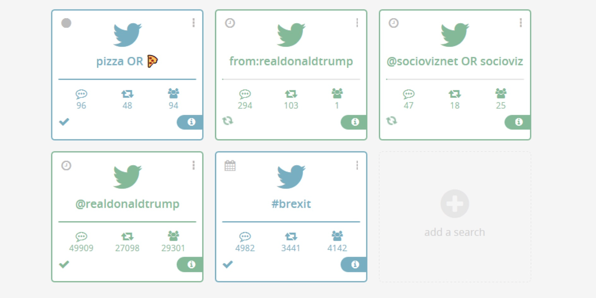
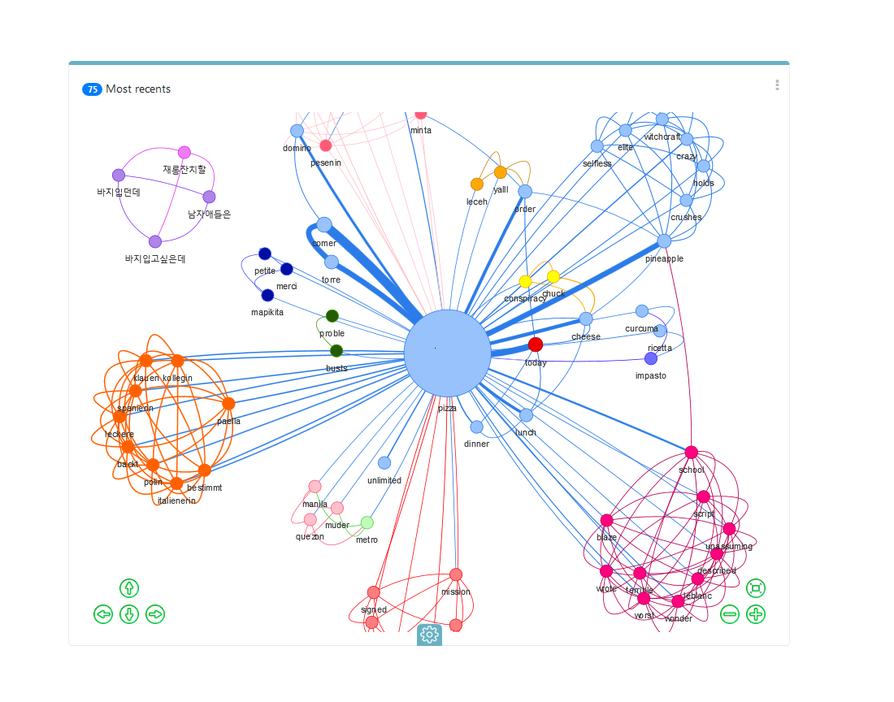
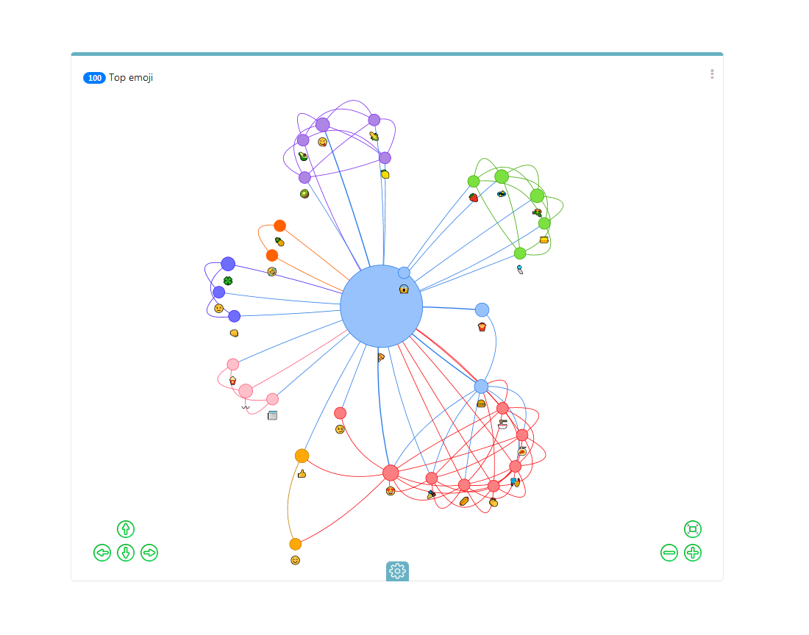
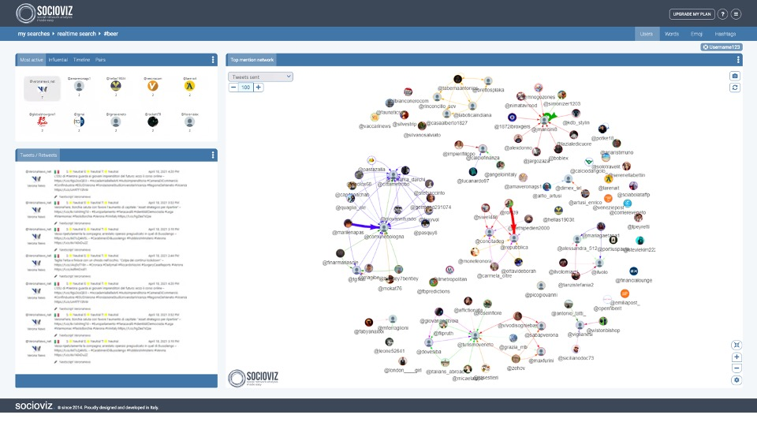

Socioviz (2014–2024): A web-based SNA tool for Twitter
Affiliation: Independent Project / StartupFor over a decade, Socioviz proudly served the research community by mapping digital conversations. Launched in 2014 as a web-based platform powered by Social Network Analysis metrics, it allowed researchers, journalists, and marketers to query the Twitter API, gather real-time data, and visualize complex networks without writing a single line of code.
The platform offered advanced features such as historical and real-time searches, emoji analytics, and the extraction of semantic and user interaction networks in standard formats like GEXF and CSV.
Reference: Zonin, A. (2025). Socioviz (2014–2024): A web-based Social Network Analysis tool for Twitter. Zenodo. DOI: 10.5281/zenodo.17913836. 176 citations on Google Scholar.



